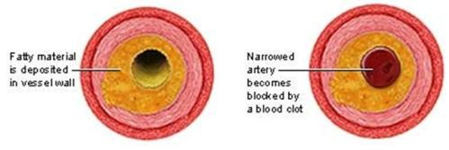

High Cholesterol (Hypercholestrolemia)
High Cholesterol (Hypercholestrolemia)
{kind=link}
Introduction
What is high cholesterol?
Cholesterol is a waxy, fat like substances, called a lipid (blood fat). It is produced in the liver. The body needs cholesterol to manufacture cell membranes, hormones and Vitamin D. Increase in dietary cholesterol increases the cholesterol in the blood. High cholesterol has come to be known as the silent killer because it is often the first symptom to be experienced and often also the last before a fatal heart attack. In the correct quantities, cholesterol is essential for health and wellbeing. But when cholesterol levels get too high, excess cholesterol becomes trapped in artery walls reducing blood flow to the heart and causing a heart attack
Types of cholesterol
LDL Low density Lipoprotein (Less than 130 mg/dL)
LDL is referred to as "bad" cholesterol. High levels may form fatty deposits in the arteries.
LDL is referred to as "bad" cholesterol. High levels may form fatty deposits in the arteries.
HDL; High Density Lipoprotein (Greater than 60 mg/dL)
HDL is known as the "good" cholesterol; it helps to remove excess LDL from the blood stream.
HDL is known as the "good" cholesterol; it helps to remove excess LDL from the blood stream.
Triglycerides; (less than 150 mg/dL)
Transport Fat in the Blood Stream.
Transport Fat in the Blood Stream.
You probably know your blood pressure, cholesterol level and maybe even your blood sugar - but what about your triglyceride level? While they get less attention than cholesterol, triglycerides are significantly linked to heart disease.
Triglycerides are the main form of fat found in foods, whether they are saturated, polyunsaturated or monounsaturated. Excess calories are converted to triglycerides for storage as body fat. Triglycerides in your blood are usually higher if you are overweight, consume too much alcohol, refined sugars or when diabetes is out of control. A high blood triglyceride level (above 150 mg/dl) is a risk factor for heart disease, so it is a must to monitor your level regularly.
The risk of developing heart disease increases as total blood cholesterol, LDL and triglycerides levels rise. Chances of developing heart disease are further increased if there are additional risk factors present e.g. diabetes, high blood pressure among others.
| Stages of atherosclerosis |
| (c) www.adam.com
|
Causes of High Cholesterol
The amount of blood cholesterol is influenced primarily by diet, hereditary factors, and diseases such as diabetes. Smoking, obesity, lack of exercise, stress and high blood pressure (hypertension) can also contribute to high cholesterol. In general blood cholesterol levels tend to rise with age.
Cholesterol is obtained from animal sources such as dairy, beef, pork, poultry egg yolks, organ meats and lamb products and consumption of saturated fat intake, such as butter, ghee, fatty parts of meat, chicken skin.
Trans fats also decrease HDL and may be involved in arrhythmias and sudden hearts attack. Trans fats are found in baked foods, processed foods (sausages, bacon, salami, frankfurters, etc) and shortening.
High consumption of sugars, processed foods, alcohol and general starch will increase your triglycerides, which in turn increases your risk of heart disease.
Symptoms of High Cholesterol
High cholesterol poses a risk of many health problems such as diabetes due to insulin insensitivity, high blood pressure due to blockage of the arteries, and heart attacks. Some of the symptoms associated with high cholesterol include:
- Angina (sharp pain on the chest) occurs due to blockage of the arteries during pumping of blood
- Arrhythmias (electron imbalance in the heart) which poses a risk to heart attack
- Atherosclerosiss which occurs when cholesterol build up mixes up with connective tissues of the blood vessel. This is eventually covered by the smooth tissue and calcium, causing hardening of the arteries. When blood flow is stopped in the coronary artery, it causes a heart attack.
|  |
| Stages of Atherosclerosis |
| (c) www.adam.com
|
Blood cholesterol levels
| Normal | 3.88 - 4.88 | Good |
| Raised | 4.88 - 6.1 | Borderline, see a dietician for nutrition education and change diet and lifestyle |
| High | 6.13 and above | High. Must see a dietician, for effective management |
Prevention and treatment
Diagnosing high cholesterol
A laboratory blood test is necessary to give an accurate indication of cholesterol levels. Generally a blood sample is taken from the arm, after the patient has fasted (gone without food) for at least 12 hours. In some cases, an automated system may be available, which can test a sample from a single pinprick of the finger.
Treatment and management
For those people with an inherited tendency towards high level of cholesterol, in the blood, lipid lowering drugs may be recommended. This may also apply with a pre-existing condition such as diabetes. A change of lifestyle may also be required to accompany any drug treatment
| Fruits and Vegetables |
Management of cholesterol
Low cholesterol is maintained by:
- Eating high fiber foods such as fruits, root vegetables, pulses and oats and whole fiber cereals (soluble fiber).
- Include seed and nuts in your diet.
- Choosing lean meats, trimming away any visible fat, skinless chicken and fish lowers saturated fat intake.
- Low fat milk, yogurt and cheese are used instead of full fat varieties.
- Butter is replaced with Trans fat free margarine.
- Fish oils (omega 3) lower triglycerides, platelet aggregation, decrease inflammatory response mechanisms and lower blood pressure.
- Polyunsaturated fats (PUFA) i.e. omega 3 and omega 6 such as soy bean, corn oil, sunflower, safflower.
- Mono-saturated fats such as olive oil, peanut oil, nuts, seeds and avocado lower LDL. However, they do not lower LDL as much as PUFA.
- Physical activity also lowers LDL as it increases HDL. A high carbohydrate diet substituted for saturated fats lowers LDL. i.e. diets rich in complex carbohydrates, fruits, vegetables and grains. However, high carbohydrate diet is not recommended for people with metabolic syndrome because it can worsen triglyceride level, HDL level and insulin resistance.
Do your part to reduce your cholesterol
Review Process
1. Draft supplied by Alice Ndong
2. Formatting and updating by Infonet March 2011
3. Review by Dr Alice Ndong February 2012
Information Source Links
- Holford, Patrich 2007: New Optimum Nutrition Bible. Piatkus books. An imprint of Little, Brown book group, 100 Victoria Embankment, London EC4Y ODY. ISBN No: 978-0-7499-2552-9. Available in Kenya through the Health Food shops
- Phylis A. Balch, and James F Balch, Prescription fro Nutritional healing, 3rd Edition.
- highcholesterolfoodsblog
- runthreeseven.wordpress.com
Last updated on:
Tue, 02/27/2018 - 20:48
| Unless otherwise stated, all content on the Infonet Biovision Website is licensed under a Creative Commons License | Disclaimer |